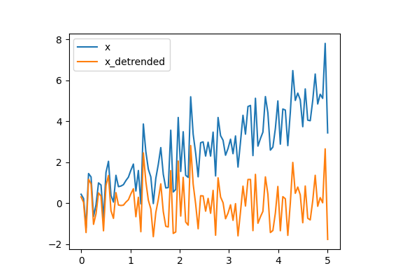
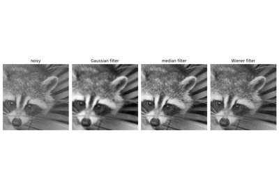

Full code examples for the SciPy chapter¶



Detrending a signal
Integrating a simple ODE

Integrate the Damped spring-mass oscillator
Integrate the Damped spring-mass oscillator

Curve fitting



Plot filtering on images


Solutions of the exercises for SciPy¶


Curve fitting: temperature as a function of month of the year
Curve fitting: temperature as a function of month of the year

Simple image blur by convolution with a Gaussian kernel
Simple image blur by convolution with a Gaussian kernel